Configuration de l'impression
Résumé des Procédures de mise au point et l’impression d’un planning
Onglet Planning en Cours : Représentation et Utilisation
Boite de dialogue « Préparation planning
Paramétrage de la visualisation du planning sur une page
Création Répartition Colonnes de la Grille gantt
Impression Planning
Configuration de l'impression
L’impression d’un rapport ou d’un planning à partir de l’onglet correspondant sera effectuer à partir de l’imprimante
qui est utilisée par défaut.
Nota Aussi, si nécessaire avant d’effectuer une impression choisissez une configuration d’impression et le matériel
utilisé dans la boite de dialogue concernée
Pour l’impression d’un rapport ou d’un planning sous un fichier PDF
vous devrez choisir dans celle-ci
Résumé des Procédures de mise au point et l’impression d’un planning
Vous allez pouvoir obtenir différents plannings visuels adaptés qui vont répondre aux différents besoins du management d’un projet au niveau de la maîtrise du temps, avec le logiciel Ecoplanning
Avec les procédures indiquées ci-après, on visualise et on imprime un planning d’un projet sur une seule page.
Nota ces procédures peuvent être effectuées à partir de chacun des onglets planning
Obtenir rapidement un premier planning qui répond à besoin donné d’un projet,
Utilisation courante d’un type de planning adapté pour un besoin donné d’un projet
Obtenir le planning d’une partie des tâches d’un projet
Compléter un planning qui est mémorisé
Créer un nouveau planning mémorisé
Obtenir rapidement un premier planning qui répond à besoin donné d’un projet,
Dans la liste des plannings mémorisés choisir celui qui correspond le plus à votre besoin.
A partir de celui-ci en tenant compte des données des tâches du projet on va obtenir rapidement une ébauche du planning désiré, que l’on va pouvoir ensuite : examiner, affiner.
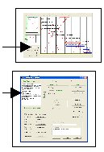
La procédure employer va être la suivante
- choisir l’onglet « Planning en cours »
- cliquer sur la commande «Préparation planning »
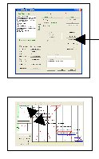
Dans la boîte de dialogue qui va apparaître
- choisir un planning dans la liste le plus voisin de votre besoin
- cliquer sur la commande « Ebauche planning»
Vous revenez dans l’onglet « Planning»
- Zoomer les différentes parties du planning pour voir les modifications apportées
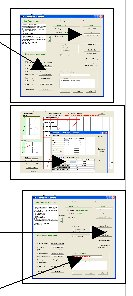
En fonctions de l’importance de ces modifications
Modifications importantes,
- cliquer sur la commande « préparation planning »
pour faire ces modifications dans la boite de dialogue préparation planning
- puis cliquer sur la commande « Appliquer» pour revenir dans l’onglet planning
nota il est possible de faire plusieurs fois successivement cette démarche : examen puis modifications
Modifications peu importantes
- utiliser les menus contextuels
sur le planning pour affiner ces modifications
Dès que la visualisation du planning vous convient
mémoriser ces modifications
- cliquer sur la commande « mémorisation planning »
Dans la boite de dialogue « préparation planning » ou vous revenez vous pourrez choisir
- de sauvegarder ce planning sous le même nom en modifiant son commentaire
- de sauvegarder ce planning sous un autre nom en ajoutant un commentaire
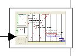
nota ce planning mémorisé s’inscrira en tête de la lites des plannings mémorisés
- cliquer sur la commande « Appliquer» pour revenir dans l’onglet planning
Dès que la visualisation du planning vous convient vous aurez deux possibilités d'impression
- de demander son impression avec l’imprimante (configuration par défaut)
- de demander l’impression de ce planning sur un fichier PDF
Utilisation courante d’un type de planning adapté pour un besoin donné d’un projet
Nous avons vu précédemment comment obtenir un premier planning, celui-ci mémorisé est inscrit en tête de liste, il pourra être réutilisé facilement et si nécessaire affiné pour un même besoin du projet.
Dans la liste des plannings mémorisés choisir ce planning qui correspond à votre besoin, et si nécessaire apporter lui de nouvelles modifications avant de l’imprimer
Nota ces procédures peuvent être effectuées à partir de chacun des onglets planning
La procédure employer va être la suivante
- choisir l’onglet «Planning en cours »
- cliquer sur la commande « Préparation planning »
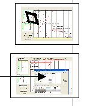
Dans la boîte de dialogue qui va apparaître
- choisir ce planning dans la liste des plannings mémorisés
- cliquer sur la commande « Appliquer»
pour revenir dans l’onglet planning
-Zoomer les différentes parties du planning pour voir
les modificationsque l'on doit apporter
utiliser les menus contextuels du planning
- pour affiner ces modifications
Dès que la visualisation du planning vous convient
mémoriser ces modifications
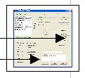
-cliquer sur la commande « mémorisation planning»
Dans la boite de dialogue « préparation planning » ou vous revenez vous pourrez choisir
- de sauvegarder ce planning sous le même nom en modifiant ou non son commentaire
- de sauvegarder ce planning sous un autre nom en ajoutant un commentaire
Dès que la visualisation du planning vous convient après examen avec le zoom
vous aurez deux possibilités d'impression du planning
- de demander son impression avec l’imprimante (configuration par défaut)
- de demander l’impression de ce planning sur un fichier PDF
Obtenir le planning d’une partie des tâches d’un projet
C’est le cas, ou l’on désire obtenir, seulement, le planning d’une partie des tâches d’un projet, avec une mise en page visuelle correcte, la procédure sera la suivante :
- charger à l’écran l’onglet «Planning en cours »
- cliquer sur la command «Préparation planning»
- choisir ce planning dans la liste des plannings mémorisés un planning du type que l’on désire obtenir
- cliquer sur la commande « Filtrer»
- choisir dans la liste des Filtres mémorisés celui qui correspond au plus près de la sélection recherchée
- apporter les modifications, si nécessaires mémoriser ce nouveau filtre
- cliquer sur la commande « affecter planning » pour revenir dans la boite préparation plannings
- cliquer sur la commande Ebauche planning
puis continuer d’appliquer la procédure décrite précédemment
Compléter un planning qui est mémorisé
Pour procéder à la modification des données des traitements d’un planning mémorisé on
procède comme suit
- choisir l’onglet «Planning en cours »
- cliquer sur la commande « Préparation planning »
Dans la boîte de dialogue qui va apparaître
- choisir un planning dans la liste des plannings mémorisés
- modifier certaines options :
Trier/grouper - Filtre
- Colonnes Gantt - Paramétrage de la page
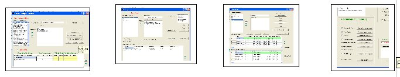
Pour visualiser le planning revenez dans l’onglet « planning en cours »
- cliquer sur la commande « Appliquer»
Vous revenez dans l’onglet « planning»’
- zoomer les différentes parties du planning pour voir les modifications apportées
Si elles sont importantes,
- cliquer sur la commande « préparation planning »
pour faire ces modifications dans la boite de dialogue préparation planning
- puis cliquer sur la commande « Appliquer» pour revenir dans l’onglet planning
Nota il est possible de faire plusieurs fois successivement
cette démarche : examen puis modifications
S’il y a encore petites modifications affaire utiliser les menus contextuels pour affiner
dès que la visualisation du planning vous convient
mémoriser ces modifications
- cliquer sur la commande « mémorisation planning »
Dans la boite de dialogue « préparation planning » ou vous revenez vous pourrez choisir
- de sauvegarder ce planning sous un autre nom en ajoutant ou non un commentaire
- de sauvegarder ce planning sous le même nom en modifiant son commentaire
nota ce planning mémorisé s’inscrira en tête de la lites des plannings mémorisés
Dès que la visualisation du planning vous convient après examen avec le zoome vous
aurez deux possibilités d'impression
- cliquer de demander son impression avec l’imprimante (configuration par défaut)
- cliquer de demander l’impression de ce planning sur un fichier PDF
Créer un nouveau planning mémorisé
La procédure employer va être la suivante
- choisir l’onglet « planning en cours »
- cliquer sur la commande « préparation planning »
Dans la boîte de dialogue qui va apparaître
- cliquer sur la commande « créer planning »
A partir des différentes options de cette boite vous allez paramétrez
les options de ce nouveau planning
Trier/grouper - Filtre
- Colonnes Gantt - Paramétrage de la page
Pour visualiser le résultat dans l'onglet « planning en cours »
préparation planning"»
- cliquer sur la commande « Ebauche planning»
- zoomer les différentes parties du planning pourvoir les modifications apportées
En fonctions des modifications à compléter
si elles sont importantes,
-cliquer sur la commande « préparation planning »
pour faire ces modifications dans la boite de dialogue préparation planning
- puis cliquer sur la commande « Appliquer» pour revenir dans l’onglet planning
nota il est possible de faire plusieurs fois successivement
cette démarche : examen puis modifications
si elles sont peu importantes
-utiliser les menus contextuels pour affiner ces modifications
Dès que la visualisation du planning vous convient
- mémoriser ces modifications
- cliquer sur la commande « mémorisation planning »
Dans la boite de dialogue « préparation planning » ou vous revenez vous pourrez
choisir
- de sauvegarder ce planning sous le même nom en modifiant ou non son commentaire
- de sauvegarder ce planning sous un autre nom en ajoutant un commentaire
Nota ce planning mémorisé s’inscrira en tête de la lites des plannings mémorisés
Remarque Il est conseillé, au lieu d’utiliser cette procédure pour créer un nouveau planning mémorisé il est conseillé d’utiliser la procédure « Compléter un planning mémorisé »
Onglets Planning - Représentation et Utilisation
Avec le logiciel Ecoplanning on accès à trois onglets planning dans lesquels on peut visualiser des plannings différents. Dans l’onglet « Planning en cours », c’est le planning du projet en cours qui apparaît en osmose avec l’onglet « Saisie prévisionnelle ».
En haut de l’onglet est indiqué pour information : les caractéristiques de ce planning :
- le nombre total de tâches du projet totale et celui visualisée à l’écran, (on connaît si un filtre a été utilisé)
- le nom du planning choisi dans la liste des plannings mémorisés
- également le nom : du trier/grouper, du filtre, voir des colonnes pour planning Gantt, utilisés.
En haut à droite on visualise sous la forme de portrait et de paysage la réduction du planning du projet donné
Choisissez un agrandissement de 1 à 10 avec le curseur du zoom, puis cliquez sur une partie du planning réduit (format portrait ou paysage), vous verrez apparaître, a droite, cette partie grossie. En ajustant l’échelle et vous déplaçant de proche vous pourrez examiner en détails le paramétrage du planning.
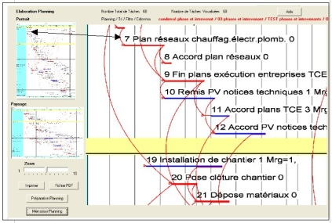
On pourra pour la mise au point du planning
- avoir accès aux différentes possibilités de paramétrage du planning à partir la boite de dialogue « Préparation Planning »
-utiliser les menus contextuels en cliquant sur la partie concernée du planning pour affiner sa visualisation
Dès que la mise au point du planning convient cliquez sur la réduction portrait ou paysage, mémoriser le paramétrage de ce planning.
Vous pourrez demander, au niveau de l'impression, soit :
- l’impression directe de ce planning visualisé à l’écran avec la configuration indiquée par défaut si nécessaire modifier le choix du type de matériel d’impression.
- le fichier PDF correspondant
Boite de dialogue « Préparation planning »
A partir des commandes dans cette boites de dialogue vous effectuerez la mise au point d’un planning.
Modifiez les données à votre convenance dans cette boite de dialogue, en revenant à l’onglet planning vous visualiserez le planning correspondant, de proche de proche ajuster cette mise au point.
Liste des plannings mémorisés
Connaissance des options mémorisées du planning
Ebauche d’un premier type de planning pour un projet donné
Créer un planning mémorisé
Paramétrage de la visualisation du planning sur une page
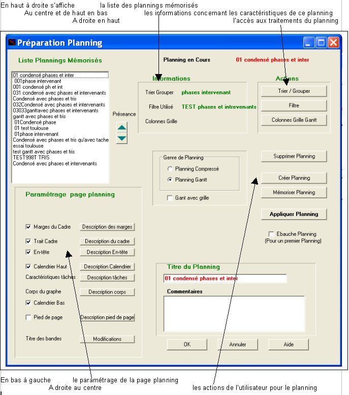
Liste des Plannings mémorisés
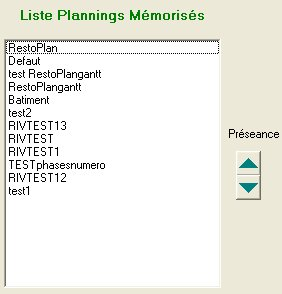
Dans la boite de dialogue « Préparation planning », en haut à droite s’affiche la liste des plannings mémorisés
Remarque si :
-on modifie un planning mémorisé et que l’on
le sauvegarde sous un nouveau nom
ou que l’on crée un nouveau planning mémorisé ils vont s’inscrire au début de la liste.
Pour choisir un planning mémorisé faites défiler la liste et cliquez sur celui-ci,
il apparaît en haut de la boite au centre. Ce planning mémorisé va s’afficher
dans le planning onglet d’ou l’on a appeler cette boite de dialogue.
Avec les flèches haute et basse on peut classer ces plannings par ordre avec les flèches de préséance.
Connaissance et modifications des options du paramétrage du planning
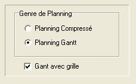
A l’écran sont indiqués les données de son paramétrage:
le genre du planning (à mi centre de la boite)
- planning compressé
- d’un planning Gantt
celui-ci est avec ou sans grille
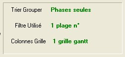
- Filtrer utilisé
- Trier/Grouper utilisé
- Colonnes grille du Gantt
le paramétrage des données du planning
Cette consultation terminée :
si vous ne vous désirez rien changer
- cliquez sur «OK » pour revenir dans l’ongle planning concerné
Vous pourrez modifier une ou plusieurs données du paramétrage de ce planning dans cette boite
- utiliser les boites des traitements en cliquant sur les commandes concernées correspondantes
- modifier les données de ces traitements pour prendre celles de votre projet
- cliquez sur «Appliquer» pour revenir dans l’ongle planning
concerné pour examiner les conséquences des modifications
- cliquer sur la commande « Ebauche planning»
si les modifications apportées ont été importantes
Après avoir plusieurs mises au point successives si nécessaire pour améliorer
la mise en page du planning. (Vous pourrez aussi utiliser les menus contextuels
dans l’onglet planning pour affiner ces modifications)
- cliquez sur «Mémoriser» pour prendre en compte ces modifications
On obtiendra ainsi un nouveau planning que l’on pourra soit conserver sous le même titre soit en créer un nouveau avec commentaires.
- cliquez sur «Appliquer » pour revenir dans l’ongle planning concerné
- demandez si besoin l’impression du planning ou fichier PDF correspondant.
Ebauche d’un type de planning pour un projet donné
Cette procédure est a utilisée lors de mise au point d’un premier planning d’un projet. Elle permet de faire apparaître la visualisation pleine page de ce planning qui va s’inscrire dans les trois cotés de la page.
Il restera a maximaliser la visualisation du planning à l’intérieur de la page de l’écran, en particulier en utilisant l’intervalle entre tâches vertical voir horizontal pour les plannings condensé.
En fin il restera affiner ce planning avec les menus contextuels, et de le sauvegarder.
Attention cette démarche n’est pas affaire sans précaution ensuite ; car elle supprime les dernières modifications qui ont été faites. Du reste, on devra confirmer l’application de cette commande, dans un message, avant que le logiciel effectue son calcul automatique.
Nota Avant d’exécuter cette procédure, vous devrez vérifier que les codes critères de votre projet sont les mêmes que ceux du traitement « Filtrer» du planning mémorisé choisi, dans le cas contraire modifier ce filtre en conséquences et mémorisé le.
Créer un planning mémorisé
Vous allez pouvoir créer de nouveaux plannings pour des besoins spécifiques puis de les mémoriser pour les réutiliser.
Lors de la création d’un nouveau planning mémorisé vous allez successivement choisir en cliquant sur les options concernées à retenir du planning dans la boite "Préparation planning"
le genre du planning (à mi centre de la boite)
br>- planning compressé
- d’un planning Gantt
celui-ci est avec ou sans grille
- Filtrer utilisé
- Trier/Grouper utilisé
- Colonnes grille du Gantt
le paramétrage des données du planning
Ce paramétrage du planning étant effectué
- cliquer sur la commande « Ebauche planning»
pour visualiser un premier planning (une ébauche)
vous pourrez l’imprimer si nécessaire
- zoomer les différentes parties du planning pour examiner
En fonctions des modifications à compléter
si elles sont importantes,
- cliquer sur la commande « préparation planning »
pour faire ces modifications dans la boite de dialogue "Préparation planning"
- puis cliquer sur la commande « Appliquer» pour revenir dans l’onglet planning
n
Nota il est possible de faire plusieurs fois successivement
cette démarche : examen puis modifications
si elles sont peu importantes
- utiliser les menus contextuels du planning pour affiner ces modifications
dès que la visualisation du planning vous convient
- cliquez sur «Mémoriser» pour prendre en compte ces modifications
On obtiendra ainsi un nouveau planning on saisira son titre avec son commentaires.
- cliquez sur «Appliquer » pour revenir dans l’ongle planning concerné
- demandez si besoin l’impression du planning ou fichier PDF correspondant.
Paramétrage de la visualisation du planning sur une page
Remarque importante Ces différents menus sont également accessibles, avec la souris, à partir des menus contextuels obtenus dans les onglets plannings.
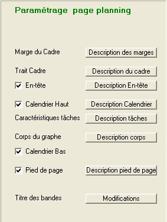
En cliquant avec la souris sur la touche des menus de chacun de
ces éléments vous allez paramétrer les données des tâches
pour une visualisation correcte du planning sur une page.
- Description marges d’impression
- Description du trait cadre
- Description du menu "En-tête"
- Description du menu Bandes Calendrier haut et bas
- Description du menu Caractéristiques des tâches
- Description du menu « Corps du graphe planning »
- Pied de page
- Description du menu AffinerTitre des Bandes « Trier/grouper »
Certains éléments sont optionnels, par défaut ils seront pris en compte, mais si on clique dans la case décochée ils ne le seront plus :En-tête - Calendrier haut - Calendrier du bas - Pied de page
Description marges d’impression
Ce menu permet de choisir les marges du planning la
distance entre le bord de la page et du cadre du planning
marge haute,,marge gauche, marge droite, marge basse
Description du trait cadre
On peut choisir pour le trait du cadre extérieur qui entour le planning :
l’épaisseur du trait, la couleur de ce trait
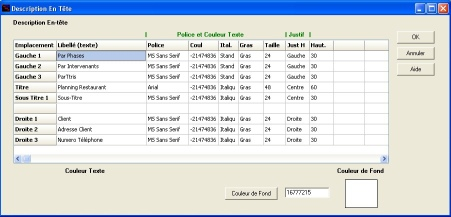
Description du menu "En-tête"
Ce menu permet de paramétrer le contenu de l'en-tête du planning. L'en-tête peut comporter deux lignes au milieu (titre et sous titre), trois lignes à gauche et trois lignes à droite pour des renseignements complémentaires.
Pour chaque ligne du texte vous pourrez choisir :
son libellé, sa police, son style, sa taille, sa couleur, sa justification horizontale,la hauteur, mais par défaut elle aura
une hauteur minimum fonction de la police
par ailleurs vous pourrez choisie la couleur du fond de l’En-tête"
Description du menu Bandes Calendrier haut et bas
Ce menu permet de paramétrer le calendrier haut et le calendrier bas du planning (ils sont identiques)
Chacun, on a deux échelles identiques par exemple (mois /semaine - semaine /jour etc )
Par défaut ils apparaissent tous les deux,
- décocher le ou les dans la boite « Préparation planning » pour le ou les occulter
Pour chacun de ces calendriers on va avoir la possibilité de paramétrer leurs échelles identiques optionnelles,dans la boite ci-dessous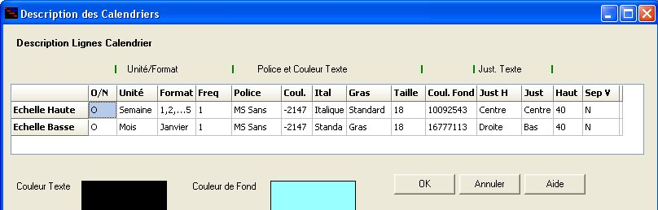
- par défaut « O » on a les deux.
- cliquez sur « N » pour supprimer du planning l’échelle correspondante.
- cliquez sur l’échelle pour voir apparaître sa couleur de fond
Au départ après avoir choisi une ou deux échelles à visualiser (la démarche à exécuter, pour les deux échelles, est identique). Si on clique sur 0 (par défaut on a les deux échelles) on supprime du planning cette échelle.
Unité/Format
- cliquez dans la colonne « Unité » ou pour choisir,dans la boîte
de dialogue qui s’affiche, l'unité de temps souhaitée à retenir
(jour, semaine, mois, trimestre ou année).
en fonction de ce premier choix il vous devrez en faire un deuxième choix
- cliquez dans la colonne « Format » choisir l’option correspondante
Fréquence
- saisissez si nécessaire directement la fréquence (la plus petite l’échelle) par défaut elles sont de1.
Par exemple pour une fréquence de trois, pour l'échelle semaine, vous ne visualisez qu'une semaine sur trois dans le niveau souhaité du calendrier.
Police couleur texte pour chaque échelle :
- choisissez pour chacune des unité/format retenues: sa police - son style - sa taille - sa couleur
Couleur de fond des échelles des calendriers
- choisissez la couleur de fond de chacune des deux échelles du calendrier.
Justification texte horizontale
- choisissez si l’unit é /format retenue est : à droite, centrée, à gauche
Hauteur
- saisissez leur hauteur des deux lignes des échelles, mais par défaut elles auront chacune, une hauteur minimum en fonction du choix de leur police.
Séparation verticale
- choisissez ou non le choix d’avoir une séparation verticale séparant l’unité de temps choisie dans l’échelle correspondante . Elle sera en continuité avec la ligne verticale correspondante du corps du graphe, elle en aura les mêmes caractéristiques.
Description du menu Caractéristiques des tâches
On devra :
- saisir les données des tâches critiques prévisionnelles
- saisir les données des tâches non critiques prévisionnelles
Volet du Haut
Dans le volet du centre en haut
- choisir la couleur du trait
- choisir l’épaisseur du trait
- choisir oui ou non d’avoir le trait de la marge totale des tâches non critique prévisionnelle
(à la suite du trait de la tâche de la même épaisseur)
dans ce cas précisez : sa couleur son style
- choisir oui où non d’avoir de faire apparaître le lien entre les tâches (soit critiques soit non critiques)
dans ce cas précisez son style, sa couleur, son épaisseur de trait
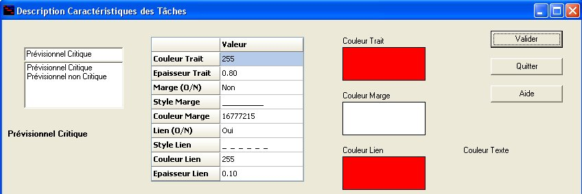
Volet duBas
Dans le volet du bas vous pourrez choisir les champs des données à faire apparaître pour chacune de ces tâches et leurs caractéristiques correspondantes
- saisissez pour ces quatre possibilités la "Police et couleur texte" correspondantes
- sélectionnez en cliquant sur O/N pour choisir et modifier ces données o/ner aisissez
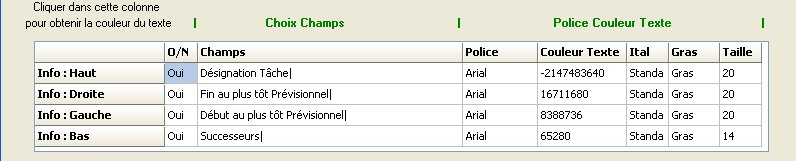
Au dessus du trait de la tâche vous pourrez faire apparaître quatre champs
exemple n °-Désignation, durée, marge totale (pour tâche non critique)
par défaut au départ on a seulement la désignation
A gauche du trait de la tâche vous pourrez faire apparaître un champ
exemple la date de début au plus tôt ou ses successeurs
par défaut au départ on a rien mais on peut avoir deb+tôt ou d’autres champs
À la droite du trait de la tâche vous pourrez faire apparaître un champ
exemple la date de fin au plus tôt
par défaut au départ on a rien mais on peut avoir fin+tôt ou d’autres champs
Au dessous du trait de la tâche vous pourrez faire apparaître un champ
pas conseillé seulement pour un besoin spécifique, ses successeurs.
par défaut au départ on a rien mais on peut avoir successeurs ou d’autres champs
Description du menu « Corps du graphe planning »
Ce menu permet de choisir :
dans le volet du haut, les colonnes verticales du planning
dans le volet du bas, le paramétrage des échelles du corps du paragraphe.
Volet du Haut paramétrage des colonnes du corps du paragraphe
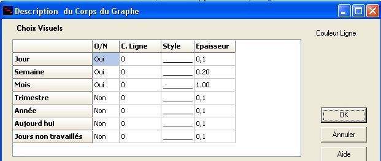
Dans le volet du haut vous allez choisir les lignes verticales qui vont délimiter le déroulement du planning au niveau des échelles de temps. par exemple choisir de faire apparaître les lignes : jours/ semaines.
- cliquez sur 0ui pour visualiser la ligne correspondante sur le planning.
- cliquez sur Non et on occulter cette ligne de la visualisation du planning.
- choisissez en suite pour chacune de ces lignes son paramétrage ::
- sa couleur, son style, son épaisseur
Dans le volet du bas « Echelles et Distances»
Vous allez avoir accès au paramétrage des éléments ayant un impacte important sur la visualisation du planning à savoir :
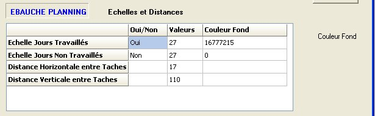
- la valeur de l’échelle des jours travaillés
cette valeur par défaut O elle ne peut être changée
- la valeur de l’échelle des Week-ends et jours non travaillés
la valeur par défaut N ces jours n’apparaissent pas
en prenant en compte ou non ces valeurs des jours des jours non travaillés on élargi le planning d’autant
pour les deux échelles
- cliquez dans la colonne de chacune des échelles des jours non travaillés pour les faire apparaître «O»
la colonne jours travaillés ne peut avoir que O
- saisissez dans les colonnes la valeur de la distance qui va être affectée à chacun de ces jours
Nota si on modifie une valeur pour une de ces deuxs échelles l'autre prendra la même valeur
- saisissez la couleur qui va apparaître dans les colonnes pour ces jours
(en principe pour les jours non travaillés)
- la distance horizontale entre tâches pour les plannings condensés
- la distance verticale entre tâches pour les plannings condensés et le Gantt
en jouant sur ces distances vous pourrez plus ou moins comprimé ou élargir ce type de planning
pour ces distances
- saisissez la distance horizontale séparant les tâches sur les seuls plannings condensé
- saisissez la distance verticale séparant les tâches pour les deux types possible (condensé ou Gantt)
Les modifications des valeurs de ces éléments ont une influence importante et directe sur la mise en page du planning sur une page
Pied de page
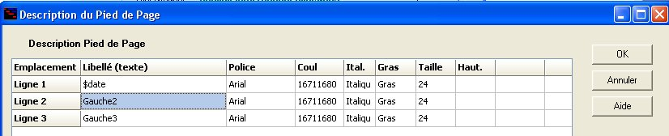
Ce menu permet de paramétrer « pied de page » du planning. Il est obtenu
- en cliquant avec le bouton droit de la souris sur l'espace réservé au pied de page du planning».
- à partir de la boite de dialogue « Paramétrage page planning »
Première ligne à gauche: dans celle-ci par défaut vous aurez la date du jour
Deuxième ligne à gauche : par défaut sans écriture on a pas de ligne
Troisième ligne à gauche : par défaut sans écriture on a pas de ligne
Pour supprimer ce pied de page écochez la commande "Pied de page" dans la boite de dialogue « Paramétrage page planning »
Titres et paramétrage des bandes
Vous aurez accès aux paramétrages des options du « Trier/grouper » du planning mémorisé
En cliquant sur cette touche vous aurez accès à la boites de dialogue correspondante et par suite, au paramétrage de ses éléments:
Création répartitions colonnes de la grille du Gantt
A partir de la boîte " Paramétrages des colonnes " vous pourrez compléter créer un nouveau paramétrages
de la grille d'un Gantt
Choisir les colonnes
Paramétrage des colonnes
Choisir les colonnes
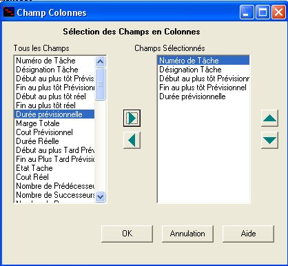
Au départ on clique sur la touche « Nouveau » pour créer un nouveau
paramétrage colonnes
puis sur « Ajouter champ »
Dans la boîte de dialogue, ci-dessous, qui va apparaître vous allez
choisir tous les champs des colonnes concernées et dans l’ordre
souhaité.
Placez-vous sur la colonne concernée et choisissez
successivement les champs concernés utilisez le bouton .
supprimer des champs de cette liste avec le bouton .
Vous pouvez utiliser les flèches de préséance pour classer les champs entre eux avec les boutons et
Cliquez sur « OK » pour le confirmer et sortir de cette boite de dialogue.
Paramétrage des colonnes
Dés que vous aurez choisis tous les champs des colonnes, les options des différents champs du nouveau rapport à créer et à mémoriser vont s’afficher successivement dans l’ordre en deuxième troisième ligne etc.,
dans le volets descriptif titres volet du centre
dans le volet descriptif des champs des colonnes. volet du bas
Choix du paramétrage du titre et des données des colonnes
Au départ si vous cliquez « appliquer par défaut » dans la première ligne des deux volets, vous allez saisir les données par défaut de l’ensemble des lignes de chacun : police et le couleur du texte , le couleur de fond (titre et colonne), la largeur
Dans un deuxième temps vous pourrez adapter celui-ci à votre besoin.
Vous allez pouvoir modifier le titre des champs dans le premier volet par exemple saisir
une abréviation (le n°)
Prendre en compte les exceptions dans les lignes concernées/
modifier la police et couleur titre - justification - Couleur fond colonne titre - la largeur de ces colonnes
Nota les largeurs dans les deux volets descriptif titres des champs des colonnes sont liées les mêmes.
Impression planning
Onglet Gantt Prévisionnel
Onglet Planning en cours
Onglet Gantt Prévisionnel
Danc cet onglet «Gantt Prévisionnel », suite à la saisie des données des tâches de leur ordonnancement, vous pourrez visualiser le planning correspondant..
Vous pourrez en demander l’impression de ce planning pour pouvoir l‘examiner, établir un brouillon sur lequel vous pourrez compléter votre analyse en rajoutant des tâches.
Comme mise au point vous pourrez
- soit diminuer, avec filtre, le nombre de tâches pour augmenter la taille des caractères et améliore la visualisation de la sortie de ce planning.
- soit de diminuer la distance verticale entre tâches pour avoir un plus grand nombre de tâches à l'écran
Nota pour permettre de regrouper ces différentes parties du planning du projet entre elles, toutes les parties seront réparties dans la totalité, mais chacune aura comme date de début celle du projet.
Onglet Planning en cours
Avec le logiciel Ecoplanning on accès à trois onglets planning dans lesquels on peut visualiser des plannings différents, mais c’est le « Planning en cours3 qui est en osmose avec l’onglet « Saisie prévisionnelle ».
Dans ceux –ci vous pourrez demander soit :
- l’impression directe de ce planning visualisé à l’écran avec la configuration indiquée par défaut
si nécessaire modifier le choix du type de matériel d’impression.
- le fichier PDF correspondant
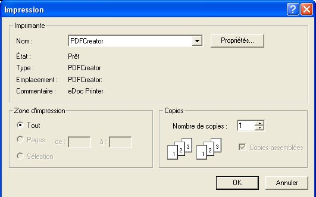
Si vous cliquez sur la touche « Fichier PDF »
Vous allez pouvoir créer un fichier PDF
du planning que vous visualiser
dans l’Onglet Planning en cours.
Vous allez voir apparaître la boite de
dialogue ci contre, le nom de l’imprimante
qui apparaîtra et « PDFCreator »
Si vous cliquez sur "Propriétés" vous aurez
accès une boite de dialogue.
Vous pourrez choisir différentes options,
en particulier :
- le format du planning
- l’orientation du planning
Votre paramétrage terminé
cliquez sur la commande «OK » pour revenir dans
la boite précédente « Impression »
|
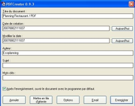 |
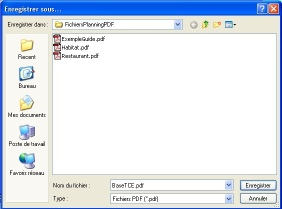 |
| Sommaire | Mots Clés | A | B | C | D | E | F | G | H | I | J | K | L | M | N | O | P | Q | R | S | T | U | V | W | X | Y | Z | Autres |